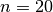
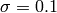

Basic Regression¶
The code shown in this tutorial can be obtained by running /pyGPs/Demo/demo_GPR.py
This demo will not only introduce the regression model, but also provides the general insight of using the package. These general information will not be repeated in other demos.
Import packages¶
Once you installed pyGPs, the typical way we recomand to import it is
from pyGPs.Core import *
import numpy as np
Load data¶
First, Load the data for this demo. The data consist of  1-d data points drawn from a unit Gaussian. This is the same data used in the GPML example, (we hardcoded it into data/regression_data.npz).
demoData = np.load('data_for_demo/regression_data.npz')
x = demoData['x'] # training data
y = demoData['y'] # training target
z = demoData['xstar'] # test data
A five-line toy example¶
Now lets do Gaussian process. Using the package is really simple. Here is one example.
model = gp.GPR() # specify model (GP regression)
model.fit(x, y) # fit default model (mean zero & rbf kernel) with data
model.train(x, y) # optimize hyperparamters (default optimizer: single run minimize)
model.predict(z) # predict test cases
model.plot() # and plot result
By default, GPR uses zero mean, rbf kernel and Gaussian liklihood. Default optimizer is a single run of Rasmussen’s minimize. You will see below how to set non-default values in another example.
GPR.plot() will plot the result, where the dark line is the posterior mean and the green-shaded area is the posterior variance. Since it is not trivial to visualize high dimension result, plot() is not a general method for all data. Here, GPR.plot() can only plot for 1-d data, while GPC.plot() is a toy method dealing with 2-d data.
{kind=link}
A more complicated example¶
Now lets do another example to get more insight to the toolbox.
You can specify non-default mean and covariance functions.
m = mean.Linear( D=x.shape[1] ) + mean.Const()
k = cov.RBF()
model.setPrior(mean=m, kernel=k)
Here we use a composite mean of a sum of linear function and a constant, and a rbf kernel function. We leave initial hyperparameters to be default. How to specify these functions are discussed in Kernels & Means. There are many things you can do with kernels and means. See Kernels & Means for a complete documentation. When kernel and mean are specified, passed them to the prior using setPrior().
Add traning data to model explictly, which saves passing them each time when using fit() or train().
model.setData(x, y)
model.plotData_1d()
{kind=link}
You can specify optimization method other than the default single run Rasmussen’s minimize. This is introduced in detail in the documentation of Optimizers .
model.setOptimizer("Minimize", num_restarts=30)
Instead of fit(), which only fits data using given hyperparameters, train() will optimize hyperparamters based on marginal likelihood.
model.train()
There are several propertys you can get from the model.
model._neg_log_marginal_likelihood_
model._neg_log_marginal_likelihood_gradient_.cov
model._neg_log_marginal_likelihood_gradient_.lik
model._neg_log_marginal_likelihood_gradient_.mean
model._posterior_.sW
model._posterior_.alpha
model._posterior_.L
model.covfunc.hyp
model.meanfunc.hyp
model.likfunc.hyp
model.fm # latent mean
model.fs2 # latent variance
model.ym # predictive mean
model.ys2 # predictive variance
model.lp # log predictive probability
For example, getting the log marginal likelihood:
print 'Optimized negative log marginal likelihood:', round(model._neg_log_marginal_likelihood_,3)
Predict test data will return five values, which are output mean(ymu)/variance(ys2), latent mean(fmu)/variance(fs2), and log predictive probabilities(lp)
ymu, ys2, fmu, fs2, lp = model.predict(z)
Set range of axis for plotting. Again, GPR.plot() is a toy method only for 1-d data.
model.plot(axisvals=[-1.9, 1.9, -0.9, 3.9])

You may have noticed that we have a different posterior by using a different prior other than the default example.
A bit more things you can do¶
[For all model] Speed up computation time for prediction if you know posterior in advance. Posterior is passed as an object with three fields(attributes) post.alpha, post.sW and post.L. How to use these vectors to present posterior is discussed in the manual.pdf of the GPML Matlab implementation by Rasmussen & Nickisch.
post = myPosterior() # known in advance
ymu, ys2, fmu, fs2, lp = model.predict_with_posterior( post,z )
[Only for Regresstion] Specify noise of data (with  by default). You don’t need to specify it if you will optimize hyperparamters later anyway.
model.setNoise( log_sigma = np.log(0.1) )